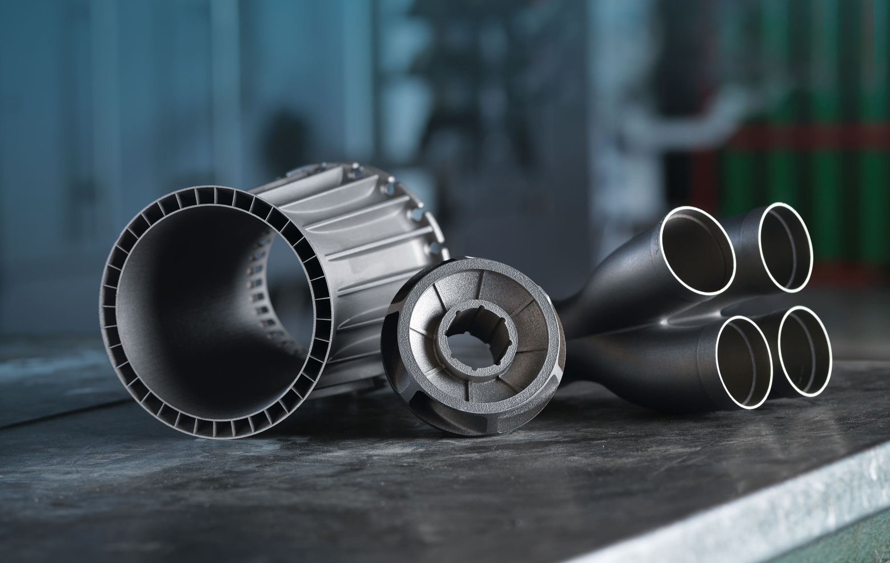
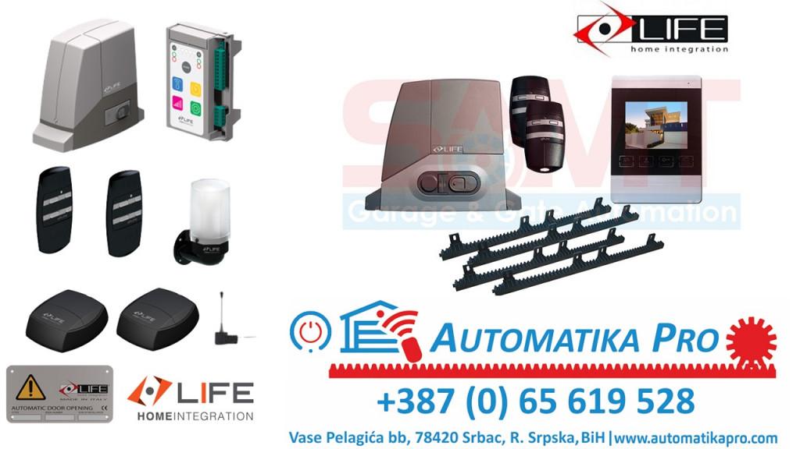

<section id="o-nama">
  <h2 id="onama-naslov">O nama</h2>
  <p id="onama-tekst1"></p>
  <p id="onama-tekst2"></p>
  <p id="onama-tekst3"></p>
  <p id="onama-tekst4"></p>
  <a class="btn-back" href="#pocetna">Nazad na početak</a>
</section>

<section id="usluge">
  <h2 id="usluge-naslov">Usluge</h2>
  <p id="usluge-tekst"></p>
  <ul id="lista-usluga"></ul>
  <p id="usluge-dodatno"></p>
  <a class="btn-back" href="#pocetna">Nazad na početak</a>
</section>

<section id="projekti">
  <h2 id="projekti-naslov">Projekti</h2>
  <div class="projekti-grid">
    <div class="projekat">
      <h3 id="proj1-naslov"></h3>
      <p id="proj1-tekst"></p>
    </div>
    <div class="projekat">
      <h3 id="proj2-naslov"></h3>
      <p id="proj2-tekst"></p>
    </div>
    <div class="projekat">
      <h3 id="proj3-naslov"></h3>
      <p id="proj3-tekst"></p>
    </div>
  </div>
  <div class="galerija">
    
    
    
    
    
    
    
    
    
    
  </div>
  <a class="btn-back" href="#pocetna">Nazad na početak</a>
</section>

<script>
const t={
  bs:{
    naslov:"Automatika PRO – Industrijska rješenja",
    podnaslov:"Profesionalno programiranje, projektovanje i izrada automatizovanih sistema – od ideje do gotovog rješenja.",
    saznajvise:"Saznaj više",
    nav:["O nama","Usluge","Projekti","Kontakt"],
    onama:[
      "Naš tim čine inženjeri i tehničari s bogatim iskustvom iz oblasti automatike, mehatronike, elektronike i programiranja. Kombinacijom znanja i inovativnog pristupa, razvijamo rješenja koja povezuju teoriju i praksu.",
      "Bavimo se razvojem, projektovanjem i implementacijom automatizovanih sistema za kućnu i industrijsku primjenu – od jednostavnih kontrolera do kompleksnih IoT sistema. Posebnu pažnju posvećujemo preciznosti, pouzdanosti i energetskoj efikasnosti svakog projekta.",
      "Naš cilj je da tehnologiju približimo svima: bilo da se radi o optimizaciji proizvodnih procesa, pametnoj rasvjeti, sistemima za nadzor okoline ili edukativnim projektima. Vjerujemo da automatika nije samo tehnologija, već korak ka pametnijem i održivijem svijetu.",
      "Pored tehničke ekspertize, posebno naglašavamo individualni pristup svakom klijentu i prilagođavanje rješenja njihovim potrebama. Naša filozofija je stalno unapređenje i inovacija, kako bi naši sistemi bili sigurni, pouzdani i dugoročno održivi."
    ],
    usluge:"Naša ponuda obuhvata kompletne usluge iz oblasti automatizacije, elektronike i tehničkog razvoja:",
    lista:[
      "Programiranje i konfiguracija Arduino, ESP32 i PLC kontrolera",
      "Izrada elektronskih ploča i razvoj prilagođenih modula po zahtjevu klijenta",
      "Projektovanje i implementacija sistema za automatizaciju u industriji i domaćinstvima",
      "Integracija senzora, aktuatora, motora i upravljačkih komponenti",
      "Modernizacija i servis postojećih automatizovanih sistema",
      "Razvoj pametnih IoT uređaja i bežičnih sistema za nadzor i kontrolu",
      "Izrada edukativnih i demonstracionih projekata za škole i tehničke fakultete"
    ],
    projekti:[
      ["Pametni sistem rasvjete","Napredni sistem koji automatski reguliše intenzitet i vrijeme rada rasvjete pomoću senzora pokreta i svjetlosti, uz mogućnost daljinskog upravljanja putem mobilne aplikacije. Sistem omogućava optimizaciju potrošnje energije i prilagođavanje osvjetljenja specifičnim potrebama prostora."],
      ["Industrijski sistem za detekciju gasova","Sofisticirani uređaj za nadzor kvaliteta zraka u proizvodnim pogonima, sa zvučnim i vizuelnim alarmom te mogućnošću povezivanja na centralni SCADA sistem. Pomaže u prevenciji opasnosti i osigurava sigurno radno okruženje."],
      ["Automatsko navodnjavanje","IoT sistem koji mjeri vlagu tla i upravlja pumpama za zalijevanje u realnom vremenu, optimizujući potrošnju vode i povećavajući efikasnost navodnjavanja. Sistem se može kontrolisati putem aplikacije i programirati prema sezonskim potrebama i tipu zemljišta."]
    ],
    contact:"Pošaljite nam poruku putem forme ispod ili direktno na e-mail: halilovicnusret8@gmail.com"
  },
  en:{
    naslov:"Automatika PRO – Industrial Solutions",
    podnaslov:"Professional programming, design and implementation of automated systems – from idea to final solution.",
    saznajvise:"Learn more",
    nav:["About Us","Services","Projects","Contact"],
    onama:[
      "Our team consists of engineers and technicians with extensive experience in automation, mechatronics, electronics, and software development. Combining technical expertise with innovative thinking, we deliver solutions that bridge theory and real-world application.",
      "We specialize in the design and implementation of automated systems for industrial and residential use – from simple controllers to complex IoT solutions. We emphasize precision, reliability, and energy efficiency in every project.",
      "Our mission is to make technology accessible to everyone: whether optimizing production processes, smart lighting, environmental monitoring, or educational projects. Automation is not just technology; it is a step toward a smarter and more sustainable world.",
      "Beyond technical expertise, we focus on individualized client solutions and adaptable systems. Our philosophy is continuous innovation and improvement, ensuring our systems are safe, reliable, and sustainable in the long term."
    ],
    usluge:"We provide comprehensive engineering and automation services tailored to your needs:",
    lista:[
      "Programming and configuration of Arduino, ESP32, and PLC controllers",
      "Design and development of custom electronic boards and modules",
      "Automation of industrial and home processes",
      "Integration of sensors, actuators, motors, and control systems",
      "Upgrades and maintenance of existing automated systems",
      "Development of smart IoT devices and wireless monitoring systems",
      "Educational and demonstration projects for schools and technical universities"
    ],
    projekti:[
      ["Smart Lighting System","An advanced system that automatically regulates light intensity and operation time using motion and light sensors, with remote control via mobile app. Optimizes energy consumption and adapts lighting to specific room requirements."],
      ["Industrial Gas Detection System","Sophisticated device for air quality monitoring in production facilities, with audio-visual alarms and connectivity to a central SCADA system. Helps prevent hazards and ensures a safe working environment."],
      ["Automatic Irrigation System","IoT system measuring soil moisture and controlling water pumps in real-time, optimizing water usage and irrigation efficiency. The system can be app-controlled and programmed according to seasonal needs and soil type."]
    ],
    contact:"Send us a message using the form below or directly at: halilovicnusret8@gmail.com"
  }
};

function postaviJezik(lang){
  document.getElementById("naslov").innerText=t[lang].naslov;
  document.getElementById("podnaslov").innerText=t[lang].podnaslov;
  document.getElementById("saznajvise").innerText=t[lang].saznajvise;
  document.getElementById("nav-onama").innerText=t[lang].nav[0];
  document.getElementById("nav-usluge").innerText=t[lang].nav[1];
  document.getElementById("nav-projekti").innerText=t[lang].nav[2];
  document.getElementById("nav-kontakt").innerText=t[lang].nav[3];
  document.getElementById("onama-tekst1").innerText=t[lang].onama[0];
  document.getElementById("onama-tekst2").innerText=t[lang].onama[1];
  document.getElementById("onama-tekst3").innerText=t[lang].onama[2];
  document.getElementById("onama-tekst4").innerText=t[lang].onama[3];
  document.getElementById("usluge-tekst").innerText=t[lang].usluge;
  document.getElementById("lista-usluga").innerHTML=t[lang].lista.map(li=>`<li>${li}</li>`).join("");
  document.getElementById("proj1-naslov").innerText=t[lang].projekti[0][0];
  document.getElementById("proj1-tekst").innerText=t[lang].projekti[0][1];
  document.getElementById("proj2-naslov").innerText=t[lang].projekti[1][0];
  document.getElementById("proj2-tekst").innerText=t[lang].projekti[1][1];
  document.getElementById("proj3-naslov").innerText=t[lang].projekti[2][0];
  document.getElementById("proj3-tekst").innerText=t[lang].projekti[2][1];
}
postaviJezik('bs'); // Default language
</script>
